MLP example#
import xarray as xr
import numpy as np
import matplotlib.pyplot as plt
import glob, os
import random
import tensorflow as tf
from tensorflow import keras
physical_devices = tf.config.list_physical_devices('GPU')
print(physical_devices)
try:
for kgpu in range(len(physical_devices)):
tf.config.experimental.set_memory_growth(physical_devices[kgpu], True)
except:
# Invalid device or cannot modify virtual devices once initialized.
pass
2023-05-11 11:56:32.601764: I tensorflow/core/platform/cpu_feature_guard.cc:193] This TensorFlow binary is optimized with oneAPI Deep Neural Network Library (oneDNN) to use the following CPU instructions in performance-critical operations: SSE4.1 SSE4.2 AVX AVX2 FMA
To enable them in other operations, rebuild TensorFlow with the appropriate compiler flags.
[]
2023-05-11 11:56:42.919495: E tensorflow/compiler/xla/stream_executor/cuda/cuda_driver.cc:267] failed call to cuInit: CUDA_ERROR_NO_DEVICE: no CUDA-capable device is detected
2023-05-11 11:56:42.919558: I tensorflow/compiler/xla/stream_executor/cuda/cuda_diagnostics.cc:156] kernel driver does not appear to be running on this host (cori16): /proc/driver/nvidia/version does not exist
Build data pipeline#
input and output variable list#
Note that ptend_t and ptend_q0001 are not in the output (mlo) netcdf files, but calculated real-time on a tf Dataset object.
Variable list: https://docs.google.com/spreadsheets/d/1ljRfHq6QB36u0TuoxQXcV4_DSQUR0X4UimZ4QHR8f9M/edit#gid=0
# in/out variable lists
vars_mli = ['state_t','state_q0001','state_ps','pbuf_SOLIN', 'pbuf_LHFLX', 'pbuf_SHFLX']
vars_mlo = ['ptend_t','ptend_q0001','cam_out_NETSW','cam_out_FLWDS','cam_out_PRECSC','cam_out_PRECC','cam_out_SOLS','cam_out_SOLL','cam_out_SOLSD','cam_out_SOLLD']
tf Dataset pipeline#
mli_mean = xr.open_dataset('./norm_factors/mli_mean.nc')
mli_min = xr.open_dataset('./norm_factors/mli_min.nc')
mli_max = xr.open_dataset('./norm_factors/mli_max.nc')
mlo_scale = xr.open_dataset('./norm_factors/mlo_scale.nc')
def load_nc_dir_with_generator(filelist:list):
def gen():
for file in filelist:
# read mli
ds = xr.open_dataset(file, engine='netcdf4')
ds = ds[vars_mli]
# read mlo
dso = xr.open_dataset(file.replace('.mli.','.mlo.'), engine='netcdf4')
# make mlo variales: ptend_t and ptend_q0001
dso['ptend_t'] = (dso['state_t'] - ds['state_t'])/1200 # T tendency [K/s]
dso['ptend_q0001'] = (dso['state_q0001'] - ds['state_q0001'])/1200 # Q tendency [kg/kg/s]
dso = dso[vars_mlo]
# normalizatoin, scaling
ds = (ds-mli_mean)/(mli_max-mli_min)
dso = dso*mlo_scale
# stack
#ds = ds.stack({'batch':{'sample','ncol'}})
ds = ds.stack({'batch':{'ncol'}})
ds = ds.to_stacked_array("mlvar", sample_dims=["batch"], name='mli')
#dso = dso.stack({'batch':{'sample','ncol'}})
dso = dso.stack({'batch':{'ncol'}})
dso = dso.to_stacked_array("mlvar", sample_dims=["batch"], name='mlo')
yield (ds.values, dso.values)
return tf.data.Dataset.from_generator(
gen,
output_types=(tf.float64, tf.float64),
output_shapes=((None,124),(None,128))
)
Instantiate tf.data.Dataset object here#
Dataset file size and dimensions: https://docs.google.com/document/d/1HgfZZJM0SygjWvSAJ5kSfql9aXUFkvLybL36p-vmdZc/edit
shuffle_buffer=384*12
# for training
# # First 5 days of each month for the first 6 years
# f_mli1 = glob.glob('/pscratch/sd/s/sungduk/hugging/E3SM-MMF_ne4/train/*/E3SM-MMF.mli.000[123456]-*-0[12345]-*.nc')
# f_mli2 = glob.glob('/pscratch/sd/s/sungduk/hugging/E3SM-MMF_ne4/train/*/E3SM-MMF.mli.0007-01-0[12345]-*.nc')
# f_mli = [*f_mli1, *f_mli2]
# every 10th sample
f_mli1 = glob.glob('/pscratch/sd/s/sungduk/hugging/E3SM-MMF_ne4/train/*/E3SM-MMF.mli.000[123456]-*-*-*.nc')
f_mli2 = glob.glob('/pscratch/sd/s/sungduk/hugging/E3SM-MMF_ne4/train/*/E3SM-MMF.mli.0007-01-*-*.nc')
f_mli = sorted([*f_mli1, *f_mli2])
random.shuffle(f_mli)
f_mli = f_mli[::10]
# # debugging
# f_mli = f_mli[0:72*5]
random.shuffle(f_mli)
print(f'[TRAIN] Total # of input files: {len(f_mli)}')
print(f'[TRAIN] Total # of columns (nfiles * ncols): {len(f_mli)*384}')
tds = load_nc_dir_with_generator(f_mli)
tds = tds.unbatch()
tds = tds.shuffle(buffer_size=shuffle_buffer, reshuffle_each_iteration=True)
tds = tds.prefetch(buffer_size=4) # in realtion to the batch size
# for validation
# # First 5 days of each month for the following 2 years
# f_mli1 = glob.glob('/pscratch/sd/s/sungduk/hugging/E3SM-MMF_ne4/train/*/E3SM-MMF.mli.0007-0[23456789]-0[12345]-*.nc')
# f_mli2 = glob.glob('/pscratch/sd/s/sungduk/hugging/E3SM-MMF_ne4/train/*/E3SM-MMF.mli.0007-1[012]-0[12345]-*.nc')
# f_mli3 = glob.glob('/pscratch/sd/s/sungduk/hugging/E3SM-MMF_ne4/train/*/E3SM-MMF.mli.000[89]-*-0[12345]-*.nc')
# f_mli_val = [*f_mli1, *f_mli2, *f_mli3]
# every 10th sample
f_mli1 = glob.glob('/pscratch/sd/s/sungduk/hugging/E3SM-MMF_ne4/train/*/E3SM-MMF.mli.0007-0[23456789]-0[12345]-*.nc')
f_mli2 = glob.glob('/pscratch/sd/s/sungduk/hugging/E3SM-MMF_ne4/train/*/E3SM-MMF.mli.0007-1[012]-0[12345]-*.nc')
f_mli3 = glob.glob('/pscratch/sd/s/sungduk/hugging/E3SM-MMF_ne4/train/*/E3SM-MMF.mli.000[89]-*-0[12345]-*.nc')
f_mli_val = sorted([*f_mli1, *f_mli2, *f_mli3])
f_mli_val = f_mli_val[::10]
# # debugging
# f_mli_val = f_mli_val[0:72*5]
random.shuffle(f_mli_val)
print(f'[VAL] Total # of input files: {len(f_mli_val)}')
print(f'[VAL] Total # of columns (nfiles * ncols): {len(f_mli_val)*384}')
tds_val = load_nc_dir_with_generator(f_mli_val)
tds_val = tds_val.shuffle(buffer_size=shuffle_buffer, reshuffle_each_iteration=True)
tds_val = tds_val.prefetch(buffer_size=4) # in realtion to the batch size
#list(tds)
# for count_batch in tds.repeat().batch(10).take(1):
# print(count_batch[0].numpy())
#count_batch[0].shape
[TRAIN] Total # of input files: 15768
[TRAIN] Total # of columns (nfiles * ncols): 6054912
2023-05-10 19:35:17.017261: I tensorflow/core/platform/cpu_feature_guard.cc:193] This TensorFlow binary is optimized with oneAPI Deep Neural Network Library (oneDNN) to use the following CPU instructions in performance-critical operations: SSE4.1 SSE4.2 AVX AVX2 FMA
To enable them in other operations, rebuild TensorFlow with the appropriate compiler flags.
2023-05-10 19:35:18.753492: I tensorflow/core/common_runtime/gpu/gpu_device.cc:1613] Created device /job:localhost/replica:0/task:0/device:GPU:0 with 38250 MB memory: -> device: 0, name: NVIDIA A100-SXM4-40GB, pci bus id: 0000:03:00.0, compute capability: 8.0
2023-05-10 19:35:18.755102: I tensorflow/core/common_runtime/gpu/gpu_device.cc:1613] Created device /job:localhost/replica:0/task:0/device:GPU:1 with 38250 MB memory: -> device: 1, name: NVIDIA A100-SXM4-40GB, pci bus id: 0000:41:00.0, compute capability: 8.0
2023-05-10 19:35:18.756681: I tensorflow/core/common_runtime/gpu/gpu_device.cc:1613] Created device /job:localhost/replica:0/task:0/device:GPU:2 with 38250 MB memory: -> device: 2, name: NVIDIA A100-SXM4-40GB, pci bus id: 0000:82:00.0, compute capability: 8.0
2023-05-10 19:35:18.758286: I tensorflow/core/common_runtime/gpu/gpu_device.cc:1613] Created device /job:localhost/replica:0/task:0/device:GPU:3 with 38250 MB memory: -> device: 3, name: NVIDIA A100-SXM4-40GB, pci bus id: 0000:c1:00.0, compute capability: 8.0
[VAL] Total # of input files: 864
[VAL] Total # of columns (nfiles * ncols): 331776
ML training#
While 4 GPUs are available on the node, using multi GPUs (with ‘tf.distribute.MirroredStrategy()’ strategy) does not speed up training process. It is possibly due to that the current Dataset pipeline is sequential.
tf.config.list_physical_devices('GPU')
[PhysicalDevice(name='/physical_device:GPU:0', device_type='GPU'),
PhysicalDevice(name='/physical_device:GPU:1', device_type='GPU'),
PhysicalDevice(name='/physical_device:GPU:2', device_type='GPU'),
PhysicalDevice(name='/physical_device:GPU:3', device_type='GPU')]
# strategy = tf.distribute.MirroredStrategy()
# with strategy.scope():
# model params
input_length = 2*60 + 4
output_length_lin = 2*60
output_length_relu = 8
output_length = output_length_lin + output_length_relu
n_nodes = 512
# constrcut a model
input_layer = keras.layers.Input(shape=(input_length,), name='input')
hidden_0 = keras.layers.Dense(n_nodes, activation='relu')(input_layer)
hidden_1 = keras.layers.Dense(n_nodes, activation='relu')(hidden_0)
output_pre = keras.layers.Dense(output_length, activation='elu')(hidden_1)
output_lin = keras.layers.Dense(output_length_lin,activation='linear')(output_pre)
output_relu = keras.layers.Dense(output_length_relu,activation='relu')(output_pre)
output_layer = keras.layers.Concatenate()([output_lin, output_relu])
model = keras.Model(input_layer, output_layer, name='Emulator')
model.summary()
# compile
model.compile(optimizer=keras.optimizers.Adam(), #optimizer=keras.optimizers.Adam(learning_rate=clr),
loss='mse',
metrics=['mse','mae','accuracy'])
Model: "Emulator"
__________________________________________________________________________________________________
Layer (type) Output Shape Param # Connected to
==================================================================================================
input (InputLayer) [(None, 124)] 0 []
dense (Dense) (None, 512) 64000 ['input[0][0]']
dense_1 (Dense) (None, 512) 262656 ['dense[0][0]']
dense_2 (Dense) (None, 128) 65664 ['dense_1[0][0]']
dense_3 (Dense) (None, 120) 15480 ['dense_2[0][0]']
dense_4 (Dense) (None, 8) 1032 ['dense_2[0][0]']
concatenate (Concatenate) (None, 128) 0 ['dense_3[0][0]',
'dense_4[0][0]']
==================================================================================================
Total params: 408,832
Trainable params: 408,832
Non-trainable params: 0
__________________________________________________________________________________________________
# callbacks
# a. tensorboard
tboard_callback = keras.callbacks.TensorBoard(log_dir = './logs_tensorboard',
histogram_freq = 1,)
# b. checkpoint
filepath_checkpoint = 'saved_model/best_model_proto.h5'
checkpoint_callback = keras.callbacks.ModelCheckpoint(filepath=filepath_checkpoint,
save_weights_only=False,
monitor='val_mse',
mode='min',
save_best_only=True)
# c. csv logger
filepath_csv = 'csv_logger.txt'
csv_callback = keras.callbacks.CSVLogger(filepath_csv, separator=",", append=True)
my_callbacks= [tboard_callback, checkpoint_callback, csv_callback]
# !mkdir logs_tensorboard
# !mkdir saved_model
# Manually shuffling the order of input files.
# "tds = tds.shuffle(buffer_size=<global>, reshuffle_each_iteration=True)" is possible,
# however, it is slow.
# So employing global shuffle (by file names) + local shuffle (using .shuffle).
N_EPOCHS = 30
shuffle_buffer = 12*384 #ncol=384
batch_size= 96 # 384/4
n=0
while n < N_EPOCHS:
random.shuffle(f_mli)
tds = load_nc_dir_with_generator(f_mli) # global shuffle by file names
tds = tds.unbatch()
# local shuffle by elements tds = tds.shuffle(buffer_size=shuffle_buffer, reshuffle_each_iteration=False)
tds = tds.batch(batch_size)
tds = tds.prefetch(buffer_size=int(shuffle_buffer/384)) # in realtion to the batch size
random.shuffle(f_mli_val)
tds_val = load_nc_dir_with_generator(f_mli_val)
tds_val = tds_val.unbatch()
tds_val = tds_val.shuffle(buffer_size=shuffle_buffer, reshuffle_each_iteration=False)
tds_val = tds_val.batch(batch_size)
tds_val = tds_val.prefetch(buffer_size=int(shuffle_buffer/384))
print(f'Epoch: {n+1}')
model.fit(tds,
validation_data=tds_val,
callbacks=my_callbacks)
n+=1
Epoch: 1
2023-05-10 19:37:27.583558: I tensorflow/compiler/xla/stream_executor/cuda/cuda_blas.cc:630] TensorFloat-32 will be used for the matrix multiplication. This will only be logged once.
2023-05-10 19:37:27.595604: I tensorflow/compiler/xla/service/service.cc:173] XLA service 0x7f9918018250 initialized for platform CUDA (this does not guarantee that XLA will be used). Devices:
2023-05-10 19:37:27.595620: I tensorflow/compiler/xla/service/service.cc:181] StreamExecutor device (0): NVIDIA A100-SXM4-40GB, Compute Capability 8.0
2023-05-10 19:37:27.595624: I tensorflow/compiler/xla/service/service.cc:181] StreamExecutor device (1): NVIDIA A100-SXM4-40GB, Compute Capability 8.0
2023-05-10 19:37:27.595626: I tensorflow/compiler/xla/service/service.cc:181] StreamExecutor device (2): NVIDIA A100-SXM4-40GB, Compute Capability 8.0
2023-05-10 19:37:27.595629: I tensorflow/compiler/xla/service/service.cc:181] StreamExecutor device (3): NVIDIA A100-SXM4-40GB, Compute Capability 8.0
2023-05-10 19:37:27.600052: I tensorflow/compiler/mlir/tensorflow/utils/dump_mlir_util.cc:268] disabling MLIR crash reproducer, set env var `MLIR_CRASH_REPRODUCER_DIRECTORY` to enable.
2023-05-10 19:37:27.621958: W tensorflow/compiler/xla/service/gpu/nvptx_helper.cc:56] Can't find libdevice directory ${CUDA_DIR}/nvvm/libdevice. This may result in compilation or runtime failures, if the program we try to run uses routines from libdevice.
Searched for CUDA in the following directories:
./cuda_sdk_lib
/usr/local/cuda-11.2
/usr/local/cuda
.
You can choose the search directory by setting xla_gpu_cuda_data_dir in HloModule's DebugOptions. For most apps, setting the environment variable XLA_FLAGS=--xla_gpu_cuda_data_dir=/path/to/cuda will work.
2023-05-10 19:37:27.705394: I tensorflow/compiler/jit/xla_compilation_cache.cc:477] Compiled cluster using XLA! This line is logged at most once for the lifetime of the process.
63072/63072 [==============================] - 1096s 17ms/step - loss: 0.0044 - mse: 0.0044 - mae: 0.0254 - accuracy: 0.9727 - val_loss: 0.0041 - val_mse: 0.0041 - val_mae: 0.0244 - val_accuracy: 0.9762
Epoch: 2
63072/63072 [==============================] - 1071s 17ms/step - loss: 0.0041 - mse: 0.0041 - mae: 0.0240 - accuracy: 0.9761 - val_loss: 0.0040 - val_mse: 0.0040 - val_mae: 0.0238 - val_accuracy: 0.9766
Epoch: 3
63072/63072 [==============================] - 1035s 16ms/step - loss: 0.0040 - mse: 0.0040 - mae: 0.0238 - accuracy: 0.9769 - val_loss: 0.0040 - val_mse: 0.0040 - val_mae: 0.0237 - val_accuracy: 0.9774
Epoch: 4
63072/63072 [==============================] - 1035s 16ms/step - loss: 0.0040 - mse: 0.0040 - mae: 0.0236 - accuracy: 0.9773 - val_loss: 0.0040 - val_mse: 0.0040 - val_mae: 0.0239 - val_accuracy: 0.9764
Epoch: 5
63072/63072 [==============================] - 1033s 16ms/step - loss: 0.0039 - mse: 0.0039 - mae: 0.0236 - accuracy: 0.9775 - val_loss: 0.0039 - val_mse: 0.0039 - val_mae: 0.0236 - val_accuracy: 0.9774
Epoch: 6
63072/63072 [==============================] - 1046s 17ms/step - loss: 0.0039 - mse: 0.0039 - mae: 0.0235 - accuracy: 0.9776 - val_loss: 0.0039 - val_mse: 0.0039 - val_mae: 0.0234 - val_accuracy: 0.9780
Epoch: 7
63072/63072 [==============================] - 1033s 16ms/step - loss: 0.0039 - mse: 0.0039 - mae: 0.0235 - accuracy: 0.9778 - val_loss: 0.0039 - val_mse: 0.0039 - val_mae: 0.0235 - val_accuracy: 0.9784
Epoch: 8
63072/63072 [==============================] - 1035s 16ms/step - loss: 0.0039 - mse: 0.0039 - mae: 0.0235 - accuracy: 0.9780 - val_loss: 0.0039 - val_mse: 0.0039 - val_mae: 0.0235 - val_accuracy: 0.9777
Epoch: 9
63072/63072 [==============================] - 1046s 17ms/step - loss: 0.0039 - mse: 0.0039 - mae: 0.0234 - accuracy: 0.9780 - val_loss: 0.0039 - val_mse: 0.0039 - val_mae: 0.0235 - val_accuracy: 0.9762
Epoch: 10
63072/63072 [==============================] - 1049s 17ms/step - loss: 0.0039 - mse: 0.0039 - mae: 0.0234 - accuracy: 0.9782 - val_loss: 0.0039 - val_mse: 0.0039 - val_mae: 0.0235 - val_accuracy: 0.9774
Epoch: 11
63072/63072 [==============================] - 1064s 17ms/step - loss: 0.0038 - mse: 0.0038 - mae: 0.0234 - accuracy: 0.9782 - val_loss: 0.0039 - val_mse: 0.0039 - val_mae: 0.0234 - val_accuracy: 0.9784
Epoch: 12
63072/63072 [==============================] - 1073s 17ms/step - loss: 0.0038 - mse: 0.0038 - mae: 0.0234 - accuracy: 0.9783 - val_loss: 0.0039 - val_mse: 0.0039 - val_mae: 0.0235 - val_accuracy: 0.9786
Epoch: 13
22445/Unknown - 357s 16ms/step - loss: 0.0038 - mse: 0.0038 - mae: 0.0234 - accuracy: 0.9783
Data Pipeline Sanity Check#
# new dataset generator function
# that has new options (latlim, lonlim)
mli_mean = xr.open_dataset('./norm_factors/mli_mean.nc')
mli_min = xr.open_dataset('./norm_factors/mli_min.nc')
mli_max = xr.open_dataset('./norm_factors/mli_max.nc')
mlo_scale = xr.open_dataset('./norm_factors/mlo_scale.nc')
ne4_grid_info = xr.open_dataset('./test_data/E3SM-MMF_ne4_grid-info.orig.nc')
def load_nc_dir_with_generator_test(filelist:list, latlim=[-999,999], lonlim=[-999,999]):
def gen():
for file in filelist:
# read mli
ds = xr.open_dataset(file, engine='netcdf4')
ds = ds[vars_mli]
ds = ds.merge(ne4_grid_info[['lat','lon']])
ds = ds.where((ds['lat']>latlim[0])*(ds['lat']<latlim[1]),drop=True)
ds = ds.where((ds['lon']>lonlim[0])*(ds['lon']<lonlim[1]),drop=True)
# read mlo
dso = xr.open_dataset(file.replace('.mli.','.mlo.'), engine='netcdf4')
dso = dso.merge(ne4_grid_info[['lat','lon']])
dso = dso.where((dso['lat']>latlim[0])*(dso['lat']<latlim[1]),drop=True)
dso = dso.where((dso['lon']>lonlim[0])*(dso['lon']<lonlim[1]),drop=True)
# make mlo variales: ptend_t and ptend_q0001
dso['ptend_t'] = (dso['state_t'] - ds['state_t'])/1200 # T tendency [K/s]
dso['ptend_q0001'] = (dso['state_q0001'] - ds['state_q0001'])/1200 # Q tendency [kg/kg/s]
dso = dso[vars_mlo]
# normalizatoin, scaling
ds = (ds-mli_mean)/(mli_max-mli_min)
dso = dso*mlo_scale
# stack
#ds = ds.stack({'batch':{'sample','ncol'}})
ds = ds.stack({'batch':{'ncol'}})
ds = ds.to_stacked_array("mlvar", sample_dims=["batch"], name='mli')
#dso = dso.stack({'batch':{'sample','ncol'}})
dso = dso.stack({'batch':{'ncol'}})
dso = dso.to_stacked_array("mlvar", sample_dims=["batch"], name='mlo')
yield (ds.values, dso.values)
return tf.data.Dataset.from_generator(
gen,
output_types=(tf.float64, tf.float64),
output_shapes=((None,124),(None,128))
)
One day snapshot
# every 10th sample
dir_test_samples = '/global/homes/s/sungduk/work/LEAP/E3SM-MMF_baseline/test_data/0010-01'
f_mli = sorted(glob.glob(f'{dir_test_samples}/E3SM-MMF.mli.0010-01-*.nc'))
f_mli = f_mli[:1]
print(f'#files: {len(f_mli)}')
tds_test = load_nc_dir_with_generator_test(f_mli)
#files: 1
# creating numpy array defeats the purpose of tf Dataset pipeline,
# but, just doing it here for quick sanity check.
work = list(tds_test.as_numpy_iterator())
x_true = np.concatenate([ work[k][0] for k in range(len(work)) ])
y_true = np.concatenate([ work[k][1] for k in range(len(work)) ])
model = keras.models.load_model("./saved_model/best_model_proto.h5")
y_pred = model(x_true)
fig, ax_ = plt.subplots(ncols=3)
fig.suptitle(f'time: {f_mli[0].split(".")[-2]}')
ax = ax_[0]
h0 = ax.pcolor(y_pred, vmin=-1, vmax=2)
ax.set_title('y_pred')
ax.set_ylabel('ncol')
ax.set_xlabel('input vector index')
plt.colorbar(h0, orientation='horizontal')
ax = ax_[1]
h1 = ax.pcolor(y_true, vmin=-1, vmax=2)
ax.set_title('y_true')
ax.set_xlabel('input vector index')
plt.colorbar(h1, orientation='horizontal')
ax = ax_[2]
h2 = ax.pcolor(y_pred-y_true, vmin=-.5,vmax=.5,cmap='bwr')
ax.set_title('y_pred - y_true')
ax.set_xlabel('input vector index')
plt.colorbar(h2, orientation='horizontal')
fig.set_size_inches(15,7)
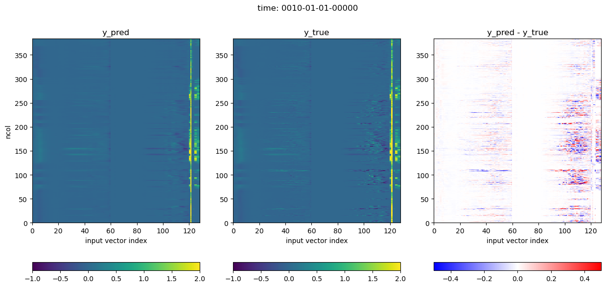
5 day mean and time series
dir_test_samples = '/global/homes/s/sungduk/work/LEAP/E3SM-MMF_baseline/test_data/0010-01'
f_mli = sorted(glob.glob(f'{dir_test_samples}/E3SM-MMF.mli.0010-01-0[12345]-*.nc'))
print(f'#files: {len(f_mli)}')
tds_test = load_nc_dir_with_generator_test(f_mli, latlim=[-10,10], lonlim=[160,200])
#files: 360
# creating numpy array defeats the purpose of tf Dataset pipeline,
# but, just doing it here for quick sanity check.
work = list(tds_test.as_numpy_iterator())
x_true = np.concatenate([ work[k][0] for k in range(len(work)) ])
y_true = np.concatenate([ work[k][1] for k in range(len(work)) ])
print(x_true.shape, y_true.shape)
model = keras.models.load_model("./saved_model/best_model_proto.h5")
y_pred = model(x_true)
fig, ax = plt.subplots()
y_true_mean_T = np.mean(y_true[:,:60], axis=0)
y_pred_mean_T = np.mean(y_pred[:,:60], axis=0)
ax.plot(y_true_mean_T)
ax.plot(y_pred_mean_T)
ax.set_title('5 Day mean (0010-01-01 to 0010-01-05)/ western eq. Pacific mean')
ax.set_xlabel('level')
ax.set_ylabel('T tendency (scaled)')
fig.set_size_inches(7.5,3)
fig, ax = plt.subplots()
y_true_mean_Q = np.mean(y_true[:,60:120], axis=0)
y_pred_mean_Q = np.mean(y_pred[:,60:120], axis=0)
ax.plot(y_true_mean_Q)
ax.plot(y_pred_mean_Q)
ax.set_title('5 Day mean (0010-01-01 to 0010-01-05)/ western eq. Pacific mean')
ax.set_xlabel('level')
ax.set_ylabel('Q tendency (scaled)')
fig.set_size_inches(7.5,3)
for k, kvar in enumerate(vars_mlo[2:]):
fig, ax = plt.subplots()
y_true_surface_var = y_true[:,120+k][:72*1]
y_pred_surface_var = y_pred[:,120+k][:72*1]
ax.plot(y_true_surface_var)
ax.plot(y_pred_surface_var)
ax.set_title('Time series (72 time steps on 0010-01-01)/ western eq. Pacific mean')
ax.set_xlabel('level')
ax.set_ylabel(f'{kvar} (scaled)')
fig.set_size_inches(7.5,2.25)
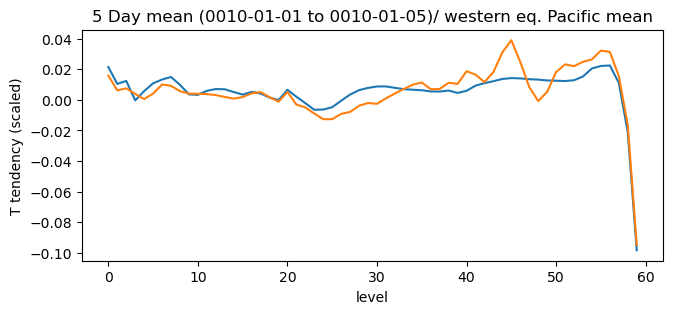
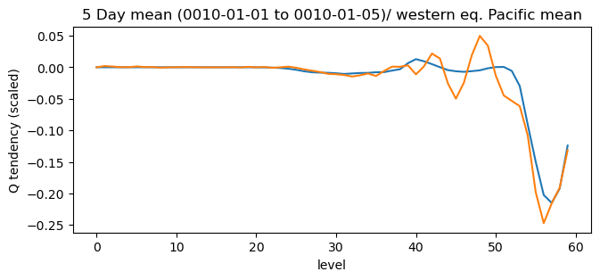
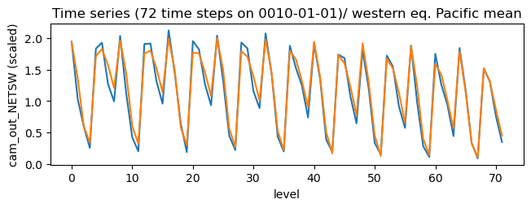
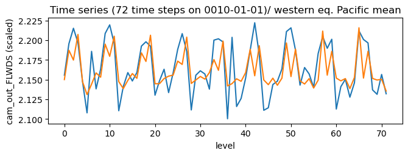
 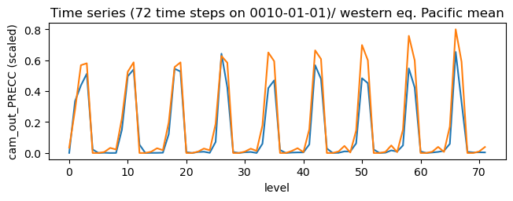
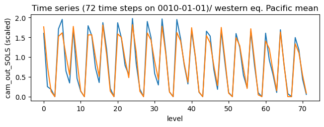
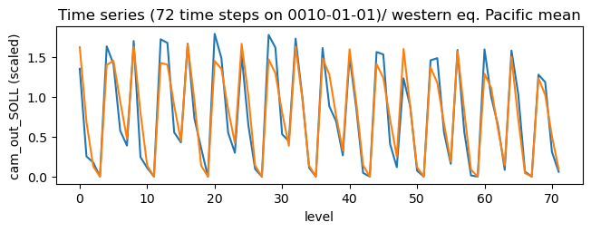
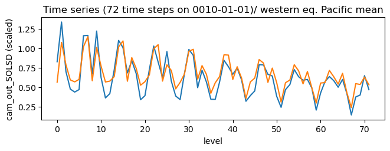
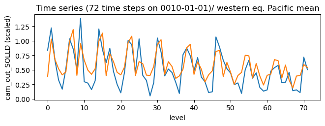
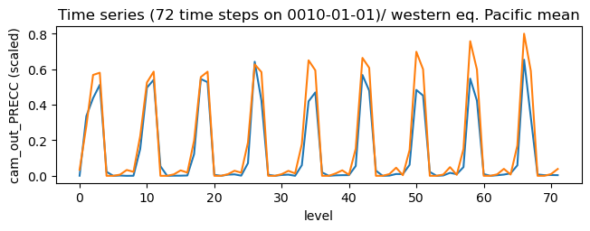
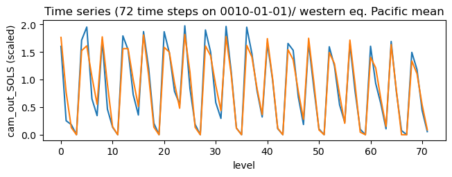
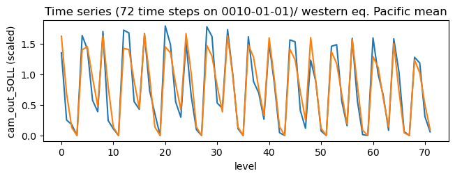
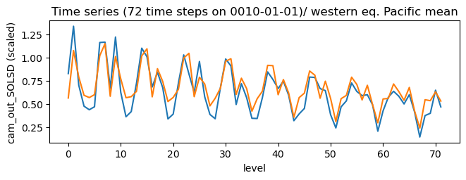
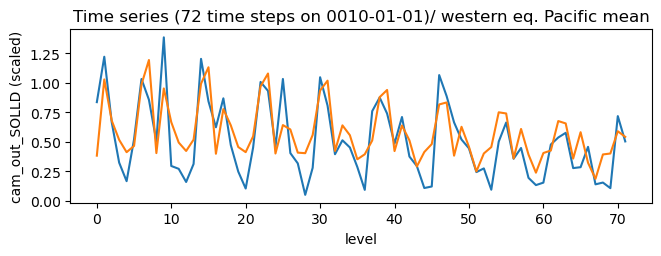
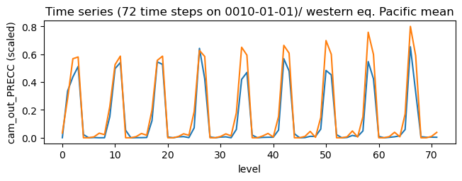
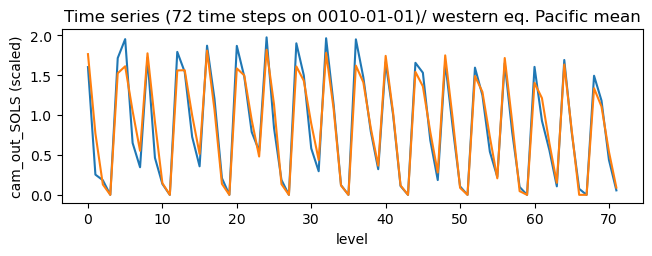
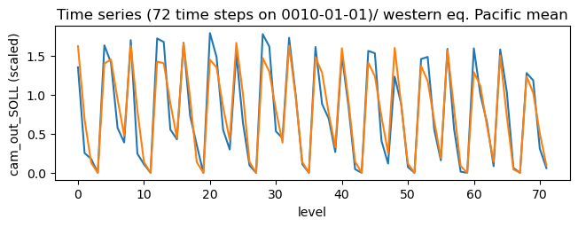
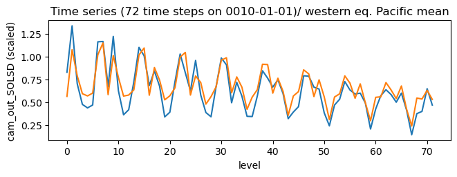
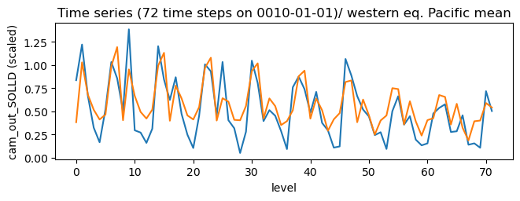